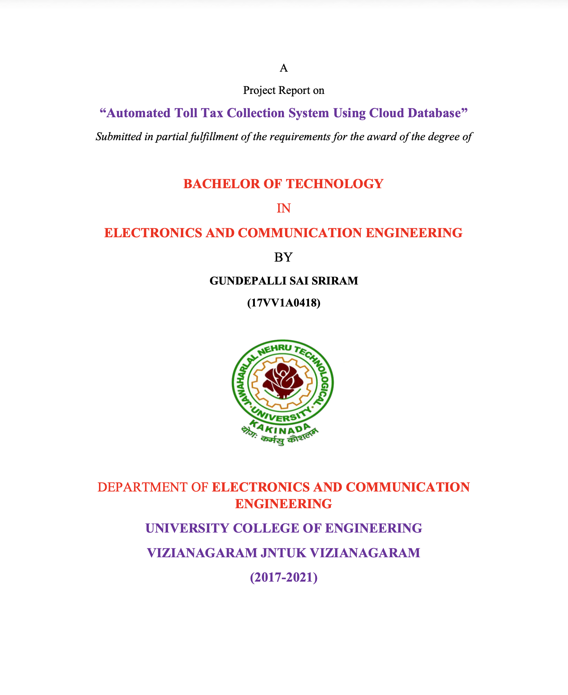

Bio
I am a prospective PhD student in Computer Science with research interests in data mining, machine learning, distributed systems, and data-intensive computing. My work centers on understanding how large-scale data systems can be designed to extract meaningful insights from real-world datasets and support intelligent, reliable, and high-performance computing environments.
With a background in software engineering and large-scale event-driven systems, I am particularly interested in predictive modeling, anomaly detection, and intelligent system optimization. My long-term goal is to contribute to research at the intersection of machine learning and systems, especially in areas such as high-performance computing, cloud systems, healthcare data, and social data analysis.
Research Interests
My research focuses on developing data-driven intelligent systems that leverage large-scale datasets for predictive modeling, anomaly detection, and system optimization.
I am interested in these connected directions.
- Data mining and machine learning for large-scale systems
- Resource usage prediction and anomaly detection in distributed environments
- High-performance and data-intensive computing systems
- Applications of machine learning in healthcare and social data analysis
What's New
- Fall 2026: Preparing PhD applications for Fall 2026 in Computer Science, with a focus on data mining, machine learning, distributed systems, and data-intensive computing.
Selected Project
This project applies machine learning techniques to analyze and model resource usage in distributed computing environments. Using synthetic cluster telemetry data, I built a pipeline for predicting CPU usage and detecting anomalous system behavior.
The project uses regression models for resource prediction and Isolation Forest for anomaly detection, demonstrating how machine learning can be applied to system-level data for performance optimization, reliability, and intelligent resource management in large-scale systems.
Writing Sample
During my undergraduate studies, I completed a technical writing project titled “Automated Toll Tax Collection System Using Cloud Database.” This work introduced me to structured technical communication, real-time data processing, and system integration, and it continues to inform my interest in data-driven intelligent systems.

Professional Background
I have 4+ years of software engineering experience building scalable back-end systems, event-driven microservices, and real-time data pipelines. My professional work has involved designing distributed systems, processing high-volume event streams, optimizing databases, and developing reliable large-scale software systems. These experiences now shape my research interests in machine learning for systems, data mining, and intelligent large-scale computing.
Education
Contact
The best way to reach me is by email. I’m happy to share additional materials (transcripts, writing samples, code) as part of the application process.